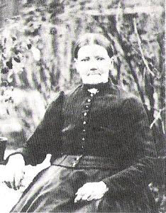

Född
1842-05-02
i Nordhult, Skogsbygden (P)
2
.
Född
1842-05-02
i Nordhult, Skogsbygden (P)
2
.
Död 1916 i Nolgård, Klevhult, Skogsbygden (P) 2 .
|
Född
1815-10-15
i Häradsvad, Nårunga (P)
1
.
Död 1898 i Nordhult, Nårunga (P) 1 . |
 |
|
Catharina Eliasdotter
Född 1815-10-15 i Häradsvad, Nårunga (P) 1 . Död 1898 i Nordhult, Nårunga (P) 1 . |
F
Elias Nilsson.
Född 1776-11-19 i Rydet 1:1, Horla (P) 1 . Död 1826-11-24 i Häradsvad, Nårunga (P) 1 . |
FF
Nils Andersson.
Född 1746 i Rydet 1:1, Horla (P) 1 . Död 1808-11-12 i Rydet 1:1, Horla (P) 1 . |
FFF Anders Olofsson. Född 1711-03-12 i Rydet 1:1, Horla (P) 1 . Död 1786-02-19 i Rydet 1:1, Horla (P) 1 . |
|
FFM Maja (Maria) Bengtsdotter. Född 1720-04-11 i Mossbo, Skogsbygden (P) 1 . Död 1806-09-21 i Horla (P) 1 . |
|||
|
FM
Karin Svensdotter.
Född 1747-11-28 i Frälsegården, Bäne, Hol (P) 1 . Död 1810-11-28 i Rydet 1:1, Horla (P) 1 . |
|||
|
M
Stina Andersdotter.
Född 1782-02-06 i Häradsvad, Nårunga (P) 1 . Död 1858-12-07 i Häradsvad, Nårunga (P) 1 . |
MF
Andreas Svensson.
|
||
|
MM
Carin Svensdotter.
|
|||
|
Gift
Anders Bengtsson. Född 1807-01-07 i Skogsbygden (P) 1 . Död 1884-08-18 i Nordhult, Nårunga (P) 1 . |
Född
1842-05-02
i Nordhult, Skogsbygden (P)
2
.
Född
1847-03-26
i Nordhult, Nårunga (P)
1
.
Framställd 2026-03-14 med hjälp av Disgen version 2025.